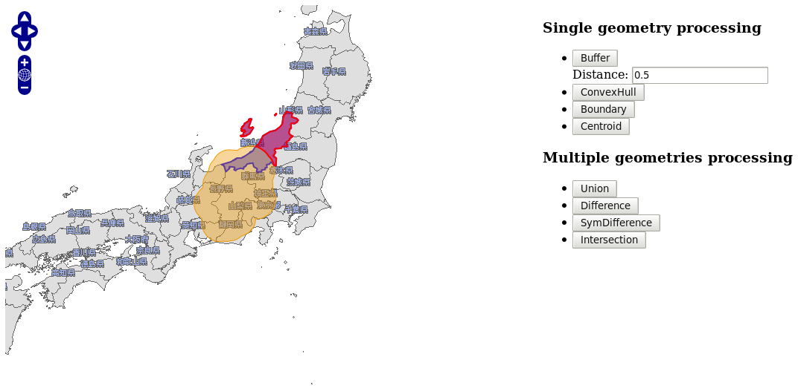
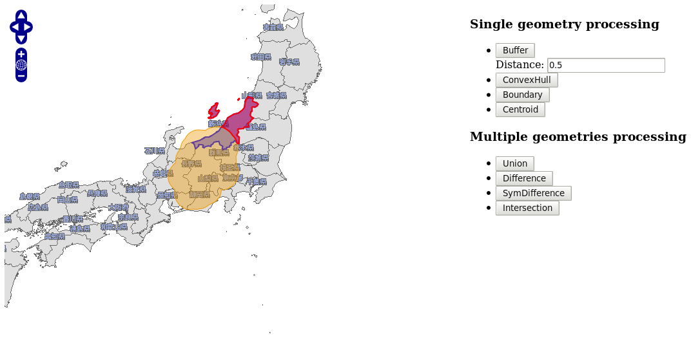

Building a WPS client using OpenLayers¶
Table of Contents
The next step of our workshop is to connect to the OGR Services we have created from an OpenLayers map. This will allow to apply single or multiple geometries processes on user-selected polygons and to display the new generated geometries.
Creating a simple map showing the dataset as WMS¶
OpenLayers is also included in OSGeoLive default distribution, so it is convenient to use it for our needs. Please open /var/www/zoo-ogr.html using your favorite text editor and paste the following HTML snippet:
<!DOCTYPE html PUBLIC "-//W3C//DTD XHTML 1.0 Strict//EN" "http://www.w3.org/TR/xhtml1/DTD/xhtml1-strict.dtd"><html xmlns="http://www.w3.org/1999/xhtml" xml:lang="EN" lang="EN">
<head>
<meta content="text/html; charset=UTF-8" http-equiv="content-type"/>
<title>ZOO WPS Client example</title>
<style>
#map{width:700px;height:600px;}
</style>
<link rel="stylesheet" href="/openlayers/theme/default/style.css" type="text/css" />
<script type="text/javascript" src="/openlayers/lib/OpenLayers.js"></script>
</head>
<body onload="init()">
<div id="map"></div>
</body>
</html>
The following JavaScript code must then be added in a <script></script> section within the <head> one. This will setup a map showing the japanese regions data as WMS.
var map, layer, select, hover, multi, control;
var typename="regions";
var main_url="http://localhost/cgi-bin/mapserv?map=/var/www/wfs.map";
function init(){
map = new OpenLayers.Map('map', {
controls: [
new OpenLayers.Control.PanZoom(),
new OpenLayers.Control.Permalink(),
new OpenLayers.Control.Navigation()
]
});
layer = new OpenLayers.Layer.WMS(typename,main_url, {
layers: 'regions',
transparent: 'true',
format: 'image/png'
},
{
isBaseLayer: true,
visibility: true,
buffer: 0,
singleTile: true
}
);
map.addLayers([layer]);
map.setCenter(new OpenLayers.LonLat(138,33.5),5);
}
Once done, please save your HTML file as zoo-ogr.html in your workshop directory, then copy it in /var/www and visualize it with your favorite Web browser using this link : http://localhost/zoo-ogr.html. You should obtain a map centered on the Japan with the WMS layer activated.

Fetching the data layer as WFS and adding selection controls¶
Before accessing the displayed data via WFS, you first have to create new vector layers dedicated to host the several interactions we are going to create. Please add the following lines within the init() function, and do not forget to add the newly created layer in the map.addLayers method:
select = new OpenLayers.Layer.Vector("Selection", {
styleMap: new OpenLayers.Style(OpenLayers.Feature.Vector.style["select"])
});
hover = new OpenLayers.Layer.Vector("Hover");
multi = new OpenLayers.Layer.Vector("Multi", { styleMap:
new OpenLayers.Style({
fillColor:"red",
fillOpacity:0.4,
strokeColor:"red",
strokeOpacity:1,
strokeWidth:2
})
});
map.addLayers([layer, select, hover, multi]);
Then, you can now access the data by creating new controls to select polygons, as the following. Please note that OpenLayers.Protocol.WFS.fromWMSLayer is used to access geometries and that several state of selection are declared and append to the control variable.
var protocol = OpenLayers.Protocol.WFS.fromWMSLayer(layer, {
featurePrefix: 'ms',
geometryName: 'msGeometry',
featureType: typename
});
control = new OpenLayers.Control.GetFeature({
protocol: protocol,
box: false,
hover: false,
multipleKey: "shiftKey",
toggleKey: "ctrlKey"
});
control.events.register("featureselected", this, function(e) {
select.addFeatures([e.feature]);
});
control.events.register("featureunselected", this, function(e) {
select.removeFeatures([e.feature]);
});
map.addControl(control);
control.activate();
Please save your HTML file again. You should now be able to select a polygon only by clicking on it. The selected polygon should appear in blue color.

Calling the single geometry services from JavaScript¶
Now that everything is setup, we can go on and call our OGR ZOO services with JavaScript. Please add the following lines after the init() function, which will call the single geometry processes. You can notice that we use a specific parseMapServerId function which let us remove the unecessary white space returned as fid value.
function parseMapServerId(){
var sf=arguments[0].split(".");
return sf[0]+"."+sf[1].replace(/ /g,'');
}
function simpleProcessing(aProcess) {
if (select.features.length == 0)
return alert("No feature selected!");
if(multi.features.length>=1)
multi.removeFeatures(multi.features);
var url = '/cgi-bin/zoo_loader.cgi?request=Execute&service=WPS&version=1.0.0&';
if (aProcess == 'Buffer') {
var dist = document.getElementById('bufferDist')?document.getElementById('bufferDist').value:'1';
if (isNaN(dist)) return alert("Distance is not a Number!");
url+='Identifier=Buffer&DataInputs=BufferDistance='+dist+'@datatype=interger;InputPolygon=Reference@xlink:href=';
} else
url += 'Identifier='+aProcess+'&DataInputs=InputPolygon=Reference@xlink:href=';
var xlink = control.protocol.url +"&SERVICE=WFS&REQUEST=GetFeature&VERSION=1.0.0";
xlink += '&typename='+control.protocol.featurePrefix;
xlink += ':'+control.protocol.featureType;
xlink += '&SRS='+control.protocol.srsName;
xlink += '&FeatureID='+parseMapServerId(select.features[0].fid);
url += encodeURIComponent(xlink);
url += '&RawDataOutput=Result@mimeType=application/json';
var request = new OpenLayers.Request.XMLHttpRequest();
request.open('GET',url,true);
request.onreadystatechange = function() {
if(request.readyState == OpenLayers.Request.XMLHttpRequest.DONE) {
var GeoJSON = new OpenLayers.Format.GeoJSON();
var features = GeoJSON.read(request.responseText);
hover.removeFeatures(hover.features);
hover.addFeatures(features);
}
}
request.send();
}
Then, some specific buttons must be added in the HTML, in order to be able to call the different processes we just declared. You can add them on top of the map by writing the following lines before the <div id="map"></div>.
<div style="float: right;padding-left: 5px;">
<h3>Single geometry processing</h3>
<ul>
<li>
<input type="button" onclick="simpleProcessing(this.value);" value="Buffer" />
<input id="bufferDist" value="1" />
</li>
<li>
<input type="button" onclick="simpleProcessing(this.value);" value="ConvexHull" />
</li>
<li>
<input type="button" onclick="simpleProcessing(this.value);" value="Boundary" />
</li>
<li>
<input type="button" onclick="simpleProcessing(this.value);" value="Centroid" />
</li>
</ul>
</div>
Save your HTML file again. You should now be able to select a polygon and to launch a Buffer, ConvexHull, Boundary or Centroid on it by clicking one of the button. The result of the process should appear as GeoJSON layer on the map, in orange color.

Calling the multiples geometries processes from JavaScript¶
Using the same technique, you can now write a function dedicated to the multiple geometries processes. Please add the following lines after the simpleProcessing() function, we will guide you during the exercise in section 5 on how to create such a function.
function multiProcessing(aProcess) {
if (select.features.length == 0 || hover.features.length == 0)
return alert("No feature created!");
var url = '/cgi-bin/zoo_loader.cgi';
var xlink = control.protocol.url +"&SERVICE=WFS&REQUEST=GetFeature&VERSION=1.0.0";
xlink += '&typename='+control.protocol.featurePrefix;
xlink += ':'+control.protocol.featureType;
xlink += '&SRS='+control.protocol.srsName;
xlink += '&FeatureID='+parseMapServerId(select.features[0].fid);
var GeoJSON = new OpenLayers.Format.GeoJSON();
try {
var params = '<wps:Execute service="WPS" version="1.0.0" xmlns:wps="http://www.opengis.net/wps/1.0.0" xmlns:ows="http://www.opengis.net/ows/1.1" xmlns:xlink="http://www.w3.org/1999/xlink" xmlns:xsi="http://www.w3.org/2001/XMLSchema-instance" xsi:schemaLocation="http://www.opengis.net/wps/1.0.0/../wpsExecute_request.xsd">';
params += '<ows:Identifier>'+aProcess+'</ows:Identifier>';
params += '<wps:DataInputs>';
params += '<wps:Input>';
params += '<ows:Identifier>InputEntity1</ows:Identifier>';
params += '<wps:Reference xlink:href="'+xlink.replace(/&/gi,'&')+'"/>';
params += '</wps:Input>';
params += '<wps:Input>';
params += '<ows:Identifier>InputEntity2</ows:Identifier>';
params += '<wps:Data>';
params += '<wps:ComplexData mimeType="application/json"> '+GeoJSON.write(hover.features[0].geometry)+' </wps:ComplexData>';
params += '</wps:Data>';
params += '</wps:Input>';
params += '</wps:DataInputs>';
params += '<wps:ResponseForm>';
params += '<wps:RawDataOutput>';
params += '<ows:Identifier>Result</ows:Identifier>';
params += '</wps:RawDataOutput>';
params += '</wps:ResponseForm>';
params += '</wps:Execute>';
} catch(e) {
alert(e);
return false;
}
var request = new OpenLayers.Request.XMLHttpRequest();
request.open('POST',url,true);
request.setRequestHeader('Content-Type','text/xml');
request.onreadystatechange = function() {
if(request.readyState == OpenLayers.Request.XMLHttpRequest.DONE) {
var GeoJSON = new OpenLayers.Format.GeoJSON();
var features = GeoJSON.read(request.responseText);
multi.removeFeatures(multi.features);
multi.addFeatures(features);
}
}
request.send(params);
}
Note that this time we didn’t use the GET method to request the ZOO Kernel but a XML POST. We did that because if you use the GET method you will get error due to the HTTP GET method limitation based on the length of your request. Using JSON string representing the geometry will make your request longer.
Once you get the functions to call your multiple geometries processes, you’ must add some buttons to fire the request call. Here is the HTML code to add to your current zoo-ogr.html file :
<h3>Multiple geometries processing</h3>
<ul>
<li>
<input type="button" onclick="multiProcessing(this.value);" value="Union"/>
</li>
<li>
<input type="button" onclick="multiProcessing(this.value);" value="Difference"/>
</li>
<li>
<input type="button" onclick="multiProcessing(this.value);" value="SymDifference"/>
</li>
<li>
<input type="button" onclick="multiProcessing(this.value);" value="Intersection"/>
</li>
</ul>
Please reload the page. You should then be able to run your multiple geometries services and you should get results displayed in red as shown by the following screenshots :
 

{kind=link}
{kind=link}

It seems that something is missing in your Services Provider to get the same results … The multiple geometries Services ! This is what we are going to do together in the next section.